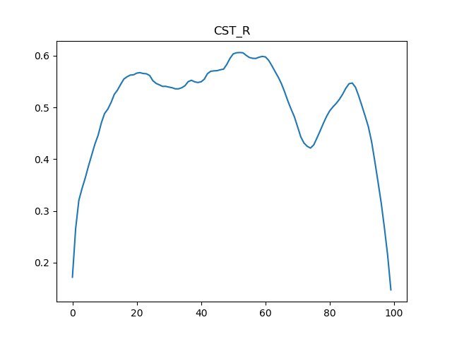
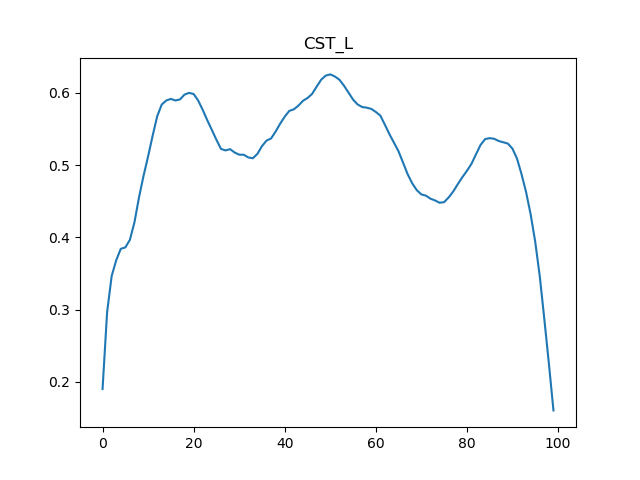
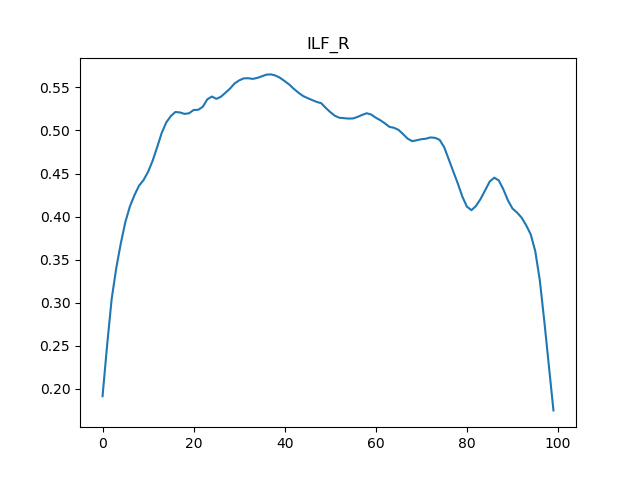
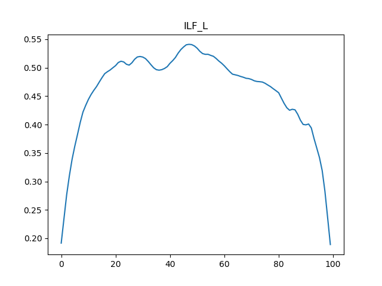

Note
Click here to download the full example code
Plotting tract profiles¶
An example of tracking and segmenting two tracts, and plotting their tract profiles for FA (calculated with DTI).
- 
- 
- 
- 
Out:
Dataset is already in place. If you want to fetch it again please first remove the folder /Users/arokem/.dipy/stanford_hardi
Calculating DTI...
Tracking...
Dataset is already in place. If you want to fetch it again please first remove the folder /Users/arokem/AFQ_data/templates
Registering to template...
Data size is approximately 70MB
Dataset is already in place. If you want to fetch it again please first remove the folder /Users/arokem/.dipy/mni_template
Data size is approximately 70MB
Dataset is already in place. If you want to fetch it again please first remove the folder /Users/arokem/.dipy/mni_template
Creating scale space from the moving image. Levels: 3. Sigma factor: 0.200000.
Creating scale space from the static image. Levels: 3. Sigma factor: 0.200000.
Optimizing level 2
Optimizing level 1
Optimizing level 0
Segmenting fiber groups...
Cleaning fiber groups...
Extracting tract profiles...
import os.path as op
import matplotlib.pyplot as plt
import numpy as np
import nibabel as nib
import dipy.data as dpd
from dipy.data import fetcher
import dipy.tracking.utils as dtu
import dipy.tracking.streamline as dts
import AFQ.utils.streamlines as aus
import AFQ.data as afd
import AFQ.tractography as aft
import AFQ.registration as reg
import AFQ.dti as dti
import AFQ.segmentation as seg
dpd.fetch_stanford_hardi()
hardi_dir = op.join(fetcher.dipy_home, "stanford_hardi")
hardi_fdata = op.join(hardi_dir, "HARDI150.nii.gz")
hardi_fbval = op.join(hardi_dir, "HARDI150.bval")
hardi_fbvec = op.join(hardi_dir, "HARDI150.bvec")
img = nib.load(hardi_fdata)
print("Calculating DTI...")
if not op.exists('./dti_FA.nii.gz'):
dti_params = dti.fit_dti(hardi_fdata, hardi_fbval, hardi_fbvec,
out_dir='.')
else:
dti_params = {'FA': './dti_FA.nii.gz',
'params': './dti_params.nii.gz'}
print("Tracking...")
if not op.exists('dti_streamlines.trk'):
streamlines = list(aft.track(dti_params['params']))
aus.write_trk('./dti_streamlines.trk', streamlines, affine=img.affine)
else:
tg = nib.streamlines.load('./dti_streamlines.trk').tractogram
streamlines = tg.apply_affine(np.linalg.inv(img.affine)).streamlines
streamlines = dts.Streamlines(dtu.move_streamlines(
[s for s in streamlines if s.shape[0] > 100],
np.linalg.inv(img.affine)))
templates = afd.read_templates()
bundle_names = ["CST", "ILF"]
bundles = {}
for name in bundle_names:
for hemi in ['_R', '_L']:
bundles[name + hemi] = {
'ROIs': [templates[name + '_roi1' + hemi],
templates[name + '_roi2' + hemi]],
'rules': [True, True],
'prob_map': templates[name + hemi + '_prob_map'],
'cross_midline': False}
print("Registering to template...")
MNI_T2_img = dpd.read_mni_template()
if not op.exists('mapping.nii.gz'):
import dipy.core.gradients as dpg
gtab = dpg.gradient_table(hardi_fbval, hardi_fbvec)
mapping = reg.syn_register_dwi(hardi_fdata, gtab)
reg.write_mapping(mapping, './mapping.nii.gz')
else:
mapping = reg.read_mapping('./mapping.nii.gz', img, MNI_T2_img)
print("Segmenting fiber groups...")
fiber_groups = seg.segment(hardi_fdata,
hardi_fbval,
hardi_fbvec,
streamlines,
bundles,
reg_template=MNI_T2_img,
mapping=mapping,
as_generator=False,
affine=img.affine)
print("Cleaning fiber groups...")
for bundle in bundles:
fiber_groups[bundle] = seg.clean_fiber_group(fiber_groups[bundle])
FA_img = nib.load(dti_params['FA'])
FA_data = FA_img.get_data()
print("Extracting tract profiles...")
for bundle in bundles:
fig, ax = plt.subplots(1)
weights = seg.gaussian_weights(fiber_groups[bundle])
profile = seg.calculate_tract_profile(FA_data, fiber_groups[bundle],
weights=weights)
ax.plot(profile)
ax.set_title(bundle)
plt.show()
Total running time of the script: ( 16 minutes 44.076 seconds)